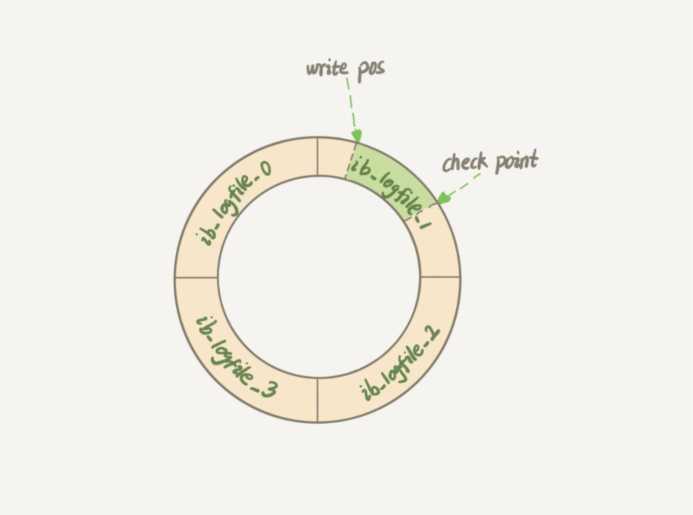

日志系统：一条SQL更新语句是如何执行的？
MySQL实战45讲-第二讲
上一节讲了一条查询语句是如何执行的，这节讲述的是一条更新语句的执行过程。
常听DBA的同事说，MySQL可以恢复到半个月内任意一秒的状态，那么是如何做到的呢？
还是以一条SQL语句开始create table user(ID int primary key,c int)
如果要将ID = 2这一行的值加1，SQL语句会这么写：update user set c = c + 1 where ID = 2
之前说的查询的链路，在执行更新语句的时候也会走一遍，因为对某张表的更新，需要先找到这张表。
与查询流程不一样的是，更新流程还涉及两个重要的日志模块redolog(重做日志)和binlog(归档日志)。接下来详细讨论下。
重要的日志模块：redo log
老师举了一个例子，是拿《孔乙己》里酒店掌柜有一个粉板，专门用来记录客人的赊帐记录。如果赊帐的人不多，那么他可以先讲顾客和账单记录在粉板上；但如果赊帐的人多了，就一定有一个专门记录赊帐的账本。
如果有人要赊帐或者还帐的话，掌柜有两种做法：
1⃣️：先讲顾客和账单记录在粉板上，等不忙的时候在去账本上更新一下。
2⃣️：有人来就拿出账本去找到顾客的记录来更新。
当店里生意红火的时候很明显的看出来是第一种方式更加的高效。
同样的MySQL里更新数据库的时候也会有同样的问题，如果每次更新操作都写入磁盘里，然后磁盘也要找到对应的那条记录，然后在更细，整个过程的IO成本，查询成本都很高，为了解决这个问题，MySQL的设计者，就用了类似酒店掌柜的粉板思路来提升更新效率。
而粉板和账本配合的过程中，就是MySQL说的WAL技术，WAL的全称是Write-Ahead Logging,简单解释就是先写日志，在写磁盘，也就是先写粉板，等不忙的时候在写磁盘。
具体来说，当有一条记录需要更新的时候，InnoDB引擎就会先把记录写到redo log(粉板)里，并更新内存，这个时候就算更新完成了，同时InnoDB引擎会在适当时候，讲这个操作更新到磁盘里，而这个更新往往是在系统比较空闲的时候做。
但如果某一天赊帐的人突然很多，粉板记录不下怎么办？这个时候掌柜只好停下手中的活儿，把粉板中的一部分赊帐记录更新到账本中，然后将这些记录从粉板上擦掉，为新账腾出空间。
与此类似，InnoDB的redo log大小是固定的，比如可以配置一组4个文件，每个文件的大小是1GB，所以这块粉板就可以存储4GB的操作，从头开始写，写到末尾就又从头开始写，如下面这个图一样

write pos是当前记录的位置，一边写一边后移，写到第3号文件末尾后就回到0号文件开头。checkpoint是当前要擦出的位置，也是往后推移并且循环的，擦出记录前要把记录更新到数据文件，
write pos和checkpoint之间的“粉板”上还空着的部分，可以用来记录新的操作，如果write pos追上checkpoint，表示“粉板”满了，这时候不能在执行新的更新，得停下来先擦掉一些记录，把checkpoint推进一下。
有了redo log，InnoDB就可以保证即使数据库发生异常重启，之前提交的记录都不会丢失，这个能力称为crash-safe。
什么是crash-safe？
crash-safe是MySQL5.6版本的新特性，要理解crash-safe这个概念，可以想想我们前面赊帐记录的例子。只要赊帐记录记在了粉板或者写在了账本上，之后即便掌柜忘记了，比如突然停业几天，恢复生意后依然可以通过账本和粉板上的数据明确赊帐账目。
crash-unsafe?
在了解crash-safe前，先分析一下在MySQL5.6版本之前出现slave(从) crash-unsafe的原因。我们知道在一套主从结构体系中，slave包含两个线程：即IO thread和SQL thread。两个线程的执行进度（偏移量）都保存在文件中。IO thread负责从master拉取binlog文件（下面会讲到）并保存到本地的relay-log文件中SQL thread负责执行重复sql，执行relay-log记录的日志
IO thread的执行状态信息保存在master.info文件，SQL thread的执行状态信息保存在relay-log.info文件。salve运行正常的情况下，记录位点没有问题，但是每当系统发生crash，存储的偏移量可能是不准确的（需要注意的是这些文件被修改后不是同步写入磁盘的）。因为应用binlog和更新位点信息到文件不是原子操作，而是两个独立的步骤。比如SQL thread已经应用relay-log.01的4个事务trx1(pos:10)trx2(pos:20)trx3(pos:30)trx4(pos:40)
但是SQL thread更新位点（relay-log.01,30）到relay-log.info文件中，slave实例重启的时候sql thread会重复执行trx4。
看到这里我们大概了解了，发生crash-unsafe的主要原因是应用binlog和更新位点不是原子操作，所以MySQL的解决办法是将两个操作融合成一个事务，这样就保证了原子性。
重要的日志模块：binlog
前面说过，MySQL整体来看，其实就有两大部分，一部分是server层，它主要做的是MySQL功能层面的事情，还有一块是引擎层，负责存储相关的具体事宜，上面我们聊到的粉板redo log是InnoDB引擎层特有日志，而Server层也有自己的日志，称为binlog（归档日志).
为什么会有两份日志呢？
因为最开始MySQL中并没有InnoDB引擎，MySQL自带的是MyISAM，但是MyISAM没有crash-safe的能力，binlog日志只能用于归档，而InnoDB是另一个公司以插件形式引入MySQL中的，既然只靠binlog是没有crash-safe能力的，所以InnoDB使用另外一套日志系统-也就是redo log来实现crash-safe能力。
这两种日志有以下三点不同。
1.redo log是InnoDB引擎特有的，binlog是MySQL的Server层实现的，所有引擎层都可以使用。
2.redo log是物理日志，记录的是“在某个数据页上做了什么修改”；binlog是逻辑日志，记录的是这个语句的原始逻辑，比如”给ID = 2这一行的c字段加1“
3.redo log是循环写的，空间固定会用完；binlog是可以追加写入的。”追加写“是指binlog文件写到一定大小后会切换到下一个，并不户覆盖以前的日志。
有了对这两个日志的概念性的理解，我们再来看执行器InnoDB引擎在执行这个简单的update语句时的内部流程。
(1).执行器先找引擎取ID = 2这一行，ID是主键，引擎直接用树搜索找到这一行，如果ID = 2这一行所在的数据页本来就在内存中，就直接返回给执行器，否则，需要先从磁盘读入内存，然后在返回。
(2).执行器拿到引擎给的行数据，把这个值加上1，比如原来是N，现在就是N+1，得到新的一行数据，在调用引擎接口写入这行新数据。
(3).引擎将这行新数据更新到内存中，同时将这个更新操作记录到redo log里，此时redo log处于prepare状态，然后告知执行器执行完成了，随时可以提交事务。
(4).执行器生成这个操作的binlog，并把binlog写入磁盘。
(5).执行器调用引擎的提交事务接口，引擎把刚刚写入的redo log改成提交（commit）状态，更新完成。
下面给出的是课程中给出的流程图，浅色框表示实在InnoDB内部执行的，深色框表示是在执行器中执行的。

后面三步为什么把redo log拆成两个步骤：prepare和commit，这就是“两阶段提交“
两阶段提交
还记不记得开头的那个问题：怎样让数据库恢复到半个月内任意一秒的状态？
前面我们说过，binlog会记录所有的逻辑操作，并且是采用“追加写”的形式。如果你的DBA承诺说半个月内可以恢复，那么备份系统中一定会保存最近半个月内的所有binlog，同时系统会定期做整库备份。这里的“定期”取决于系统的重要性，可以是一天一备，也可以是一周一备。
当需要恢复到指定的某一秒时，比如某天下午两点发现中午十二点有一次误删表，需要找回数据，那你可以这么做：
首先，找到最近的一次全量备份，如果你运气好，可能就是昨天晚上的一个备份，从这个备份恢复到临时库；
然后，从备份的时间点开始，将备份的binlog依次取出来，重放到中午误删表之前的那个时刻。
这样你的临时库就喝误删之前的线上库一样了，然后你可以把表数据从临时库取出来，按需恢复到线上库去。说完了这个问题，再回过头来说为什么一定要有”两阶段提交“ ，为什么必须有”两阶段提交“呢？这是为了让两份日志之间的逻辑一致，如果不用两阶段提交看看会发生什么？
不使用两阶段提交无非两种情况：
1.先写redo log后写binlog。假设在redo写完，binlog还没有写完的时候，MySQL进程异常重启，由于前面说过，redo log写完之后，系统及时崩溃，仍然能够把数据恢复回来，所以恢复这一行c的值是1。
但是由于binlog没写完就crash了，这时候binlog里面就没有记录这个语句，因此，之后备份日志的时候，存起来的binlog里面就没有这条语句。然后你会发现，如果需要用这个binlog来恢复临时库的话，由于语句的binlog丢失，这个临时库就会少了一次更新，恢复出来的这一行c的值就是0，与原库的值不同。
2.先写binlog后写redo log。如果在binlog写完之后异常重启，由于redo log还没写，崩溃恢复以后这个事务无效，所以这一行c的值是0，但是binlog里面记录了“把c从0改成1”这个日志，所以，在之后用binlog恢复临时库的时候就多了一个事务出来，恢复出来的这一行c的值就是1，与原库的值不同。
可以看到如果不使用“两阶段提交”，那么数据库的状态就有可能和用它的日志恢复出来的库状态不一致。
可能会有疑问，这个概率是不是很低，平时也没有什么动不动就需要恢复临时库的场景呀？
其实不是，不只是误操作后需要用这个过程来恢复数据，当你需要扩容的时候，也就是需要再多搭建一些备库来增加系统的读能力的时候，现在常见的做法也是用全量备份加上应用binlog来实现的，这个“不一致”就会导致你的线上出现主从数据库不一致的情况。
简单说，redo log和binlog都可以用于表示事务的提交状态，而两阶段提交就是让这两个状态保持逻辑上的一致。
其实redo log记录的就是数据，而binlog有两种模式，statement格式的话是记sql语句，row格式会记录行的内容，记两条，更新前和更新后都有。